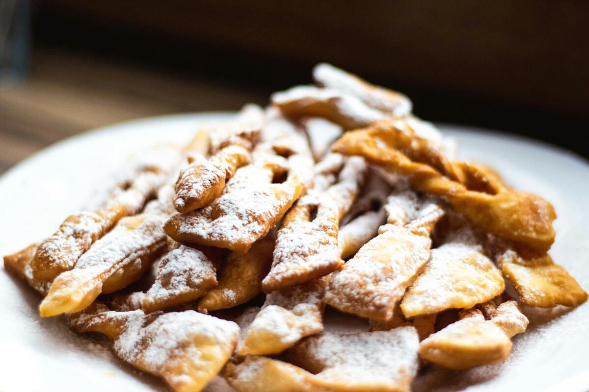

Faworki (chrust)
Składniki:
250 g mąki
3 żółtka
2 łyżki cukru
2 łyżki śmietany 18%
1 łyżka spirytusu
szczypta soli
olej do smażenia i cukier puder do posypania
Przygotowanie:
Wszystkie składniki zagnieść na gładkie ciasto. Wyrabiać kilka minut, rozwałkować cienko. Kroić paski, robić nacięcia i przekładać jeden koniec przez środek.
Smażyć na złoty kolor w rozgrzanym oleju (170°C). Osączyć na ręczniku papierowym, posypać cukrem pudrem.
